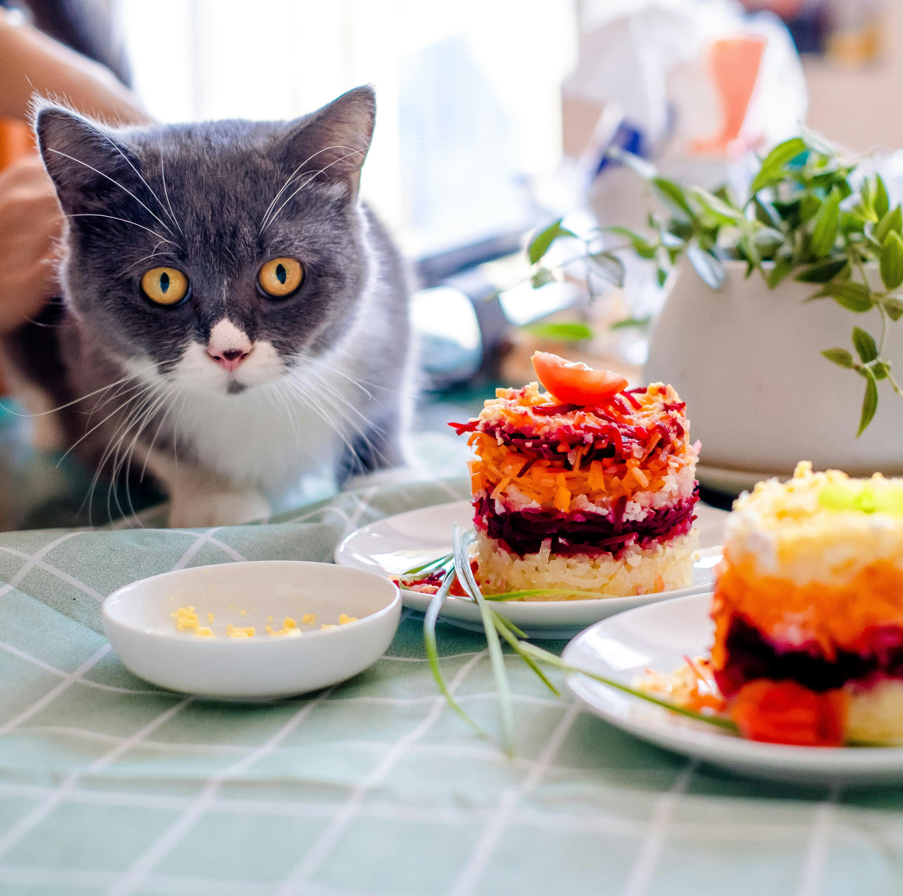

Strogonoff

No longer made with cats (unsure if once they were), the strogonoff is a russian dish that is popular in Brazil.
Ingredients
- Chicken breast or thigh
- Spoonful of mayonaise
- Baby bella mushrooms
- Whipping cream
- Spoonful of ketchup
- Spoonful of mustard
Amount depends on personal taste and size/shape of ingredients.
Steps
- Cut the chicken into small, bite size portions.
- In a bowl, mix the chicken with the mayonaise.
- Cut the baby bellas and put to the side.
- Mix the ketchup and mustard and put to the side.
- Cook the chicken until seared.
- Add the mushroom to absorb the liquid.
- Put in the mixed ketchup and mustard.
- Mix in the whipping cream.
- Serve.